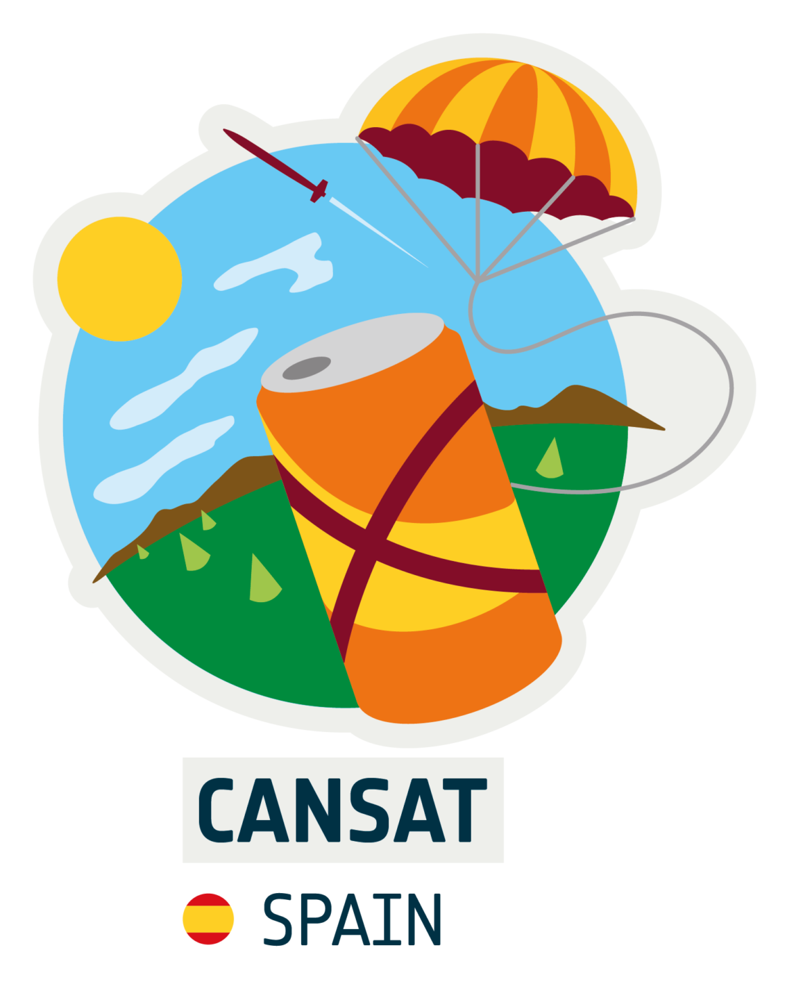
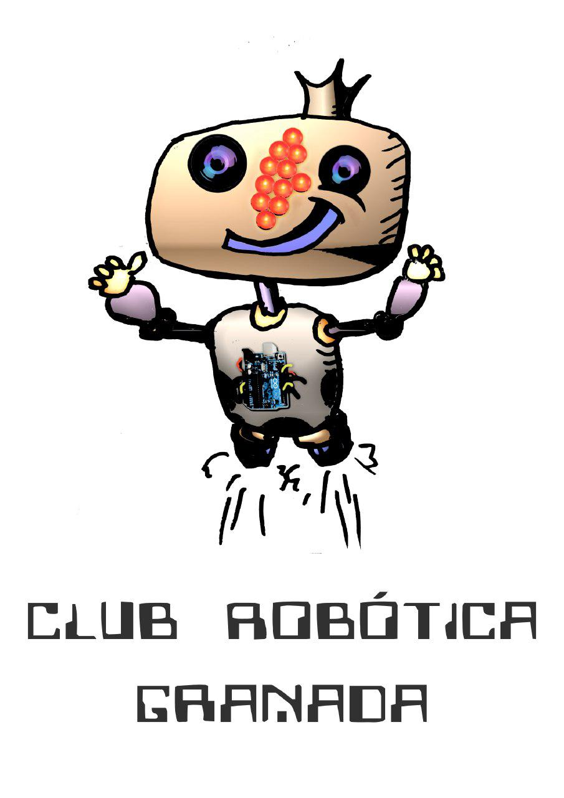
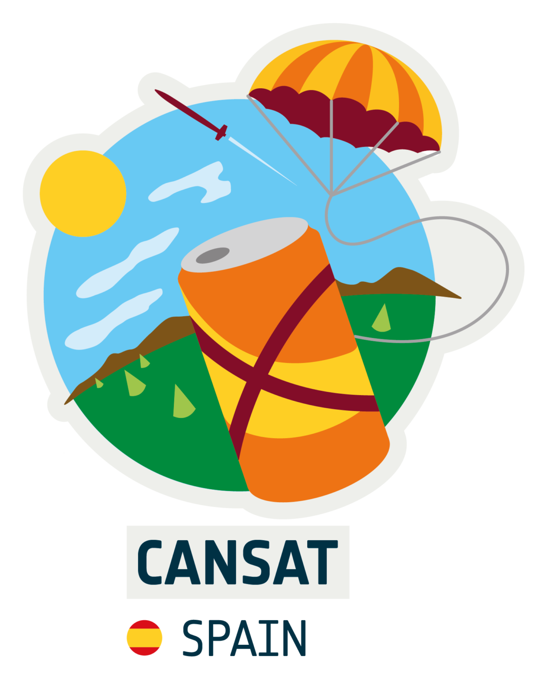
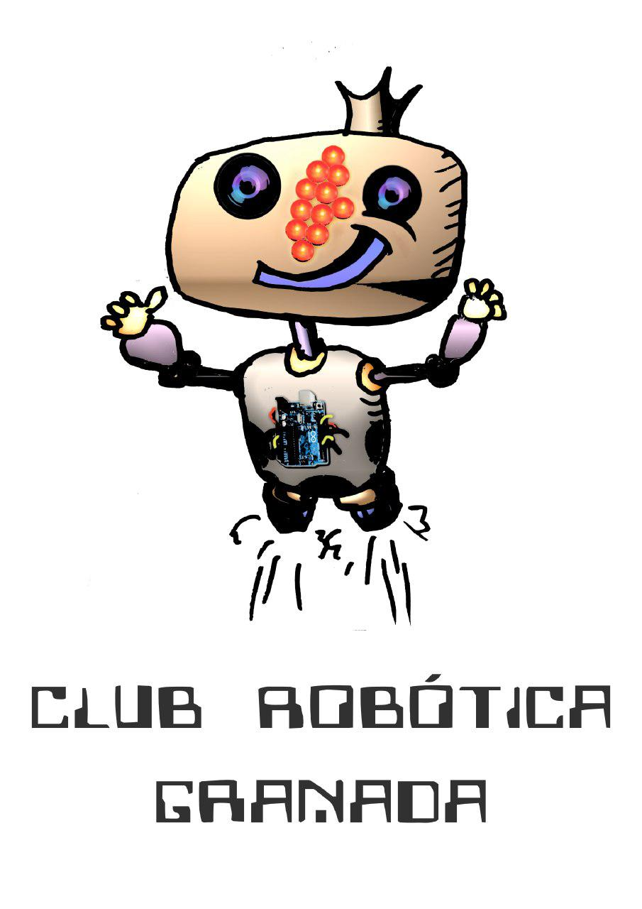

Este proyecto del Club Robótica GRanada, trata de hacer accesible el proyecto CANSAT al mayor número de miembros de la comunidad educativa y/o aficionad@s.

Este proyecto del Club Robótica GRanada, trata de hacer accesible el proyecto CANSAT al mayor número de miembros de la comunidad educativa y/o aficionad@s.

Obra publicada con Licencia Creative Commons Reconocimiento Compartir igual 4.0